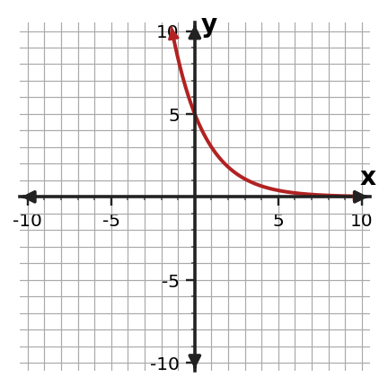
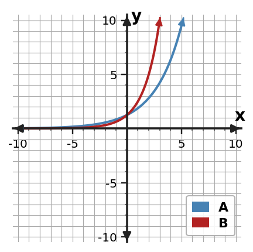
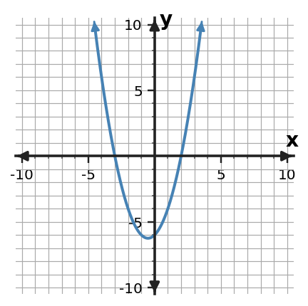

Algebra Practice 7.3
1. For $f(x)=5(\frac{5}{4})^x$, complete a key-point table for $x=-1,0,1,2$. Use the points to describe the graph as growth or decay.
2. Make a small table of key points and sketch $y=6(\frac{1}{2})^x$. Label the $y$-intercept and horizontal asymptote.
3. Without graphing every point, identify the $y$-intercept of $f(x)=7(\frac{5}{4})^x$ and explain how you know.
4. For the basic exponential function $y=4(2)^x$, state the horizontal asymptote and describe whether the graph reaches it.
5. State the domain and range of $f(x)=4(\frac{5}{4})^x$.
6. Use the graph to identify the $y$-intercept, describe the end behavior, and decide whether it shows exponential growth or decay.

7. A student graphs $y=5(0.6)^x$ and draws the curve crossing the x-axis at $x=4$. Assess the description and name the exponential-graph feature that decides the issue.
8. Graphs A and B have the same positive initial value, but one uses factor 1.5 and the other uses factor 2. Which graph grows faster for positive $x$? Explain how the graph supports your answer.

9. Describe what happens to $f(x)=7(\frac{5}{4})^x$ as $x$ becomes very large and as $x$ becomes very negative.
10. A colony is modeled by $P(t)=30(1.4)^t$. Describe the graph’s initial value and long-term behavior in the context.
11. For $f(x)=3(\frac{3}{2})^x$, complete a key-point table for $x=-1,0,1,2$. Use the points to describe the graph as growth or decay.
12. Make a small table of key points and sketch $y=5(\frac{5}{4})^x$. Label the $y$-intercept and horizontal asymptote.
13. Without graphing every point, identify the $y$-intercept of $f(x)=7(2)^x$ and explain how you know.
14. For the basic exponential function $y=9(\frac{1}{3})^x$, state the horizontal asymptote and describe whether the graph reaches it.
15. State the domain and range of $f(x)=6(\frac{4}{3})^x$.
16. Use the graph to identify the $y$-intercept, describe the end behavior, and decide whether it shows exponential growth or decay.

17. A student graphs $y=2(1.5)^x$ with y-intercept $(0,2)$ and values increasing as x increases. Assess the description and name the exponential-graph feature that decides the issue.
18. Graphs A and B begin at the same $y$-intercept. At $x=1$, compare their outputs and explain how that comparison reflects the different growth factors.

19. Solve $x^{2} + 4 x - 5=0$ by completing the square.
20. Rewrite $y=x^{2} + 4 x - 3$ in vertex form by completing the square, then state the vertex.
21. Solve $(x+3)^2=9$ by using the square-root step that appears after completing the square.
22. For $f(x)=(x-2)(x-6)$, find the zeros and state the corresponding $x$-intercepts.
23. A monic quadratic has zeros $x=-2$ and $x=5$. Write the function in factored form and identify its $x$-intercepts.
24. The graph crosses the $x$-axis at $x=-3$ and $x=2$. Write a possible monic quadratic in factored form and explain how the factors encode the intercepts.
